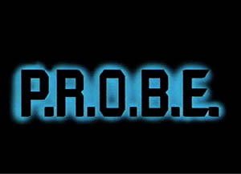
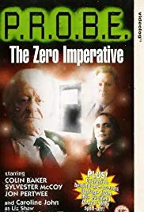
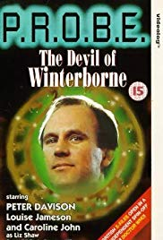
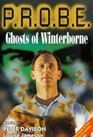
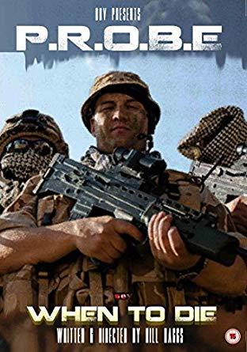

P.R.O.B.E
História
Os créditos finais listam o primeiro nome da sra. Wyndham como Barbara, em vez de seu nome na tela de Margaret. No entanto, a irmã gêmea falecida da sra. Wyndham, Sra. Taploe, também foi chamada Barbara.
Até o lançamento de Zygon: When Being You Just não é suficiente em 2007, este foi o único produto relacionado ao Doctor Who que recebeu um certificado de 18 anos, embora em 2012 Ghosts tenha sido re-classificado como 12.
1 – O Imperativo Zero (1994)
The Zero Imperative foi lançadoBBVdiretamente em vídeo em janeiro de 1994 peloBBV
Sinopse:
A ex- luminária da UNIT, Liz Shaw, e sua assistente Bayliss estão investigando uma série de assassinatos bizarros, todos cometidos perto de um hospital psiquiátrico que será fechado em breve.
Quando o hospital é inesperadamente reprimido pelos ricos eventos do industrial Peter Russell, parece sair do controle de Liz. O diretor da clínica, o doutor Dove e seu antecessor, o doutor O’Kane, abrigam o assassino? Qual é o horror secular escondido no local?
E qual é exatamente o segredo do quarto zero?
Elenco:
Caroline John – Liz Shaw
Patricia Haggard – Louise Jameson
Linda Lusardi – Louise Bayliss
Dr. Jeremiah O’Kane – Jon Pertwee
Dr. Colin Dove – Sylvester McCoy
Peter Russell – Colin Baker
Dr. William Bruffin – Mark Gatiss
Paciente Zero – David Terence
Dr. Beatrice Hearst – Nicola Fulljames
Dr. Gilchrist – Patricia Merrick
Cummings – Jonathan Rigby
PRO – Sophie Aldred
Ordenado – Simon Messingham
Ordenado – Alexander Kirk
Ordenado – Robert John Preston
Paciente um – Peter Davison
Daniel – Bill Baggs
A Voz do Menino – Daniel Mills
DownloadLegendado
2 – O Diabo de Winterborne (1995)
The Devil of Winterborne foi lançadoBBVdiretamente em vídeo em janeiro de 1995 pela BBV .
Sinopse:
Quando o PROBE é convocado para investigar o assassinato selvagem do diretor aposentado Sr. Whittaker e seu cachorro, Liz Shaw fica perturbada ao encontrar evidências de um ritual satânico próximo à cena do crime. A trilha que leva ao engano e à corrupção se estende aos atuais ocupantes da vizinha Escola de Winterborne, onde parece que alguém está determinado a encobrir um segredo antigo – a qualquer custo. Com outro animal que mordeu o pó, o atual professor acusado de assassinar um aluno e um dos funcionários mais antigos da escola foi esfaqueado com uma faca, Liz se vê sob crescente pressão de todos os lados para produzir resultados, especialmente com o PROBE sob ameaça de dentro – e o número de mortos. Contudo,
Elenco:
Caroline John – Liz Shaw
Patricia Haggard – Louise Jameson
DI Burke – Terry Molloy
Brian Rutherford – Geoffrey Beevers
Sr. Wittaker – Geoffrey Beevers
Gavin Purcell – Peter Davison
Barbara Taploe – Charmian May
Georgie – Mark Gatiss
Cristão – Daniel Matthews
Andrew Powell – Reece Shearsmith
Lucas – Stephen Dolomore
Cummings – Jonathan Rigby
DownloadLegendado
3 – Seleção não natural (1996)

Unnatural Selection BBVfoi lançado diretamente em vídeo em outubro de 1996 pelo BBV .
Sinopse:
Em 1975, o governo britânico silenciosamente encerrou um projeto evolutivo secreto com o codinome BEAGLE, ordenando a destruição de todos os materiais de pesquisa.
Hoje, a terrível descoberta de vários corpos estranhamente mutantes alerta Liz Shaw e PROBE para o fato de que algo está perseguindo o local original do projeto BEAGLE – algo que pode desafiar a própria natureza da humanidade!
Com uma equipe de segurança de crack à sua disposição, Liz tenta desesperadamente rastrear os resultados pervertidos do projeto.
Mas quem ou o que está caçando quem?
Elenco:
Caroline John – Liz Shaw
Patricia Haggard – Louise Jameson
Julius Quilter – Charles Kay
Brian Rutherford – Geoffrey Beevers
Soldado – Stephen Bradshaw
Soldado – Keith Brooks
Alfred Emerson – Mark Gatiss
Coronel Ackroyd – Alexander Kirk
Dr. Gilchrist – Patricia Merrick
Soldado – Mark Moore
Guarda de segurança – George Murphy
Soldado – Gabriel Mykaj
Clare – Zoe Randall
Angela – Kathryn Rayner
Cummings – Jonathan Rigby
Dr. Dennis Lancaster – Simon Wolfe
DownloadLegendado
4 – Fantasmas de Winterborne (1996)
Ghosts of Winterborne foi lançadoBBVdiretamente em vídeo em novembro de 1996 peloBBV
Sinopse:
O diabo de Winterborne foi recentemente exorcizado pelo PROBE
Mas quando o corpo de sua última vítima desaparece e um livro de feitiços de magia negra é roubado de um museu local, Liz Shaw começa a se perguntar se os fantasmas do passado foram realmente descansados.
Forçada a uma aliança profana com o diretor desonrado da escola, Liz deve combater não apenas suas próprias emoções em guerra, mas um mal purulento que ameaça corromper a Terra novamente depois de 100 anos.
Mas como você luta contra uma sombra do inferno?
Elenco:
Caroline John – Liz Shaw
Patricia Haggard – Louise Jameson
Gavin Purcell – Peter Davison
Cristão – Daniel Matthews
Margaret Wyndham – Charmian May
Andrew Powell – Reece Shearsmith
Max – David Hankinson
Ian – Nathan Hamlett
Bibliotecário – Alan Nicholas
DownloadLegendado
5 – Quando morrer (2015)
When to Die foi lançadoBBVdiretamente em vídeo em 20 de abril de 2015 pelaBBV
Sinopse:
Liz investiga a execução do governo de um cabo imortal que ‘não tem mais utilidade’.
Elenco:
Liz Shaw – Hazel Burrows
Patricia Haggard – Georgette Ellison
Giles – Bill Baggs
Secretário de Estado da Defesa – Matthew Ellison
Guarda de segurança – Danni Fletcher
Josie Williams – Clare Groome
Recepcionista – Kathrina Gwynne
Major Johnson – Neil Gwynne
Charlie Reynish – Ken Hann
Marcus Kinsella – Bennett
Soldado – Ruben Sanchez
Diplomata da Bósnia – Brian Stansbridge
Download (Legendado) Em Breve